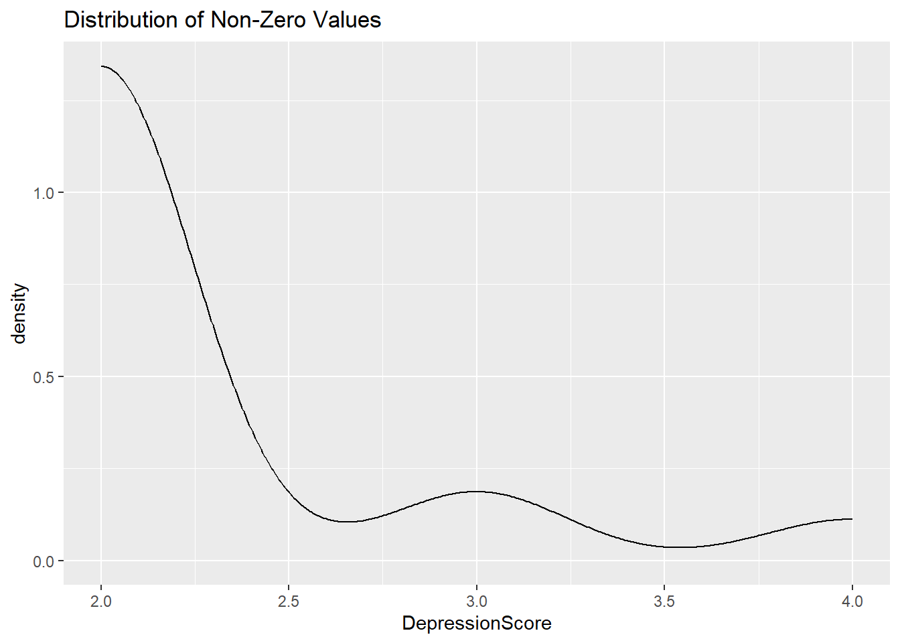

smp_size<-floor(0.8*nrow(master2))
train_ind <- sort(sample(nrow(master2), nrow(master2)*.7))
train <- master2[train_ind, ]
val <- master2[-train_ind,]11 NHANES Extension to Zero Inflated Models
::: {.cell}
library(tidyverse)
library(randomForest)
library(caret)
master<-read.csv("C:\\Users\\gmandl\\Documents\\GitHub\\DATA495.github.io\\Data\\NHANES\\master_depression.csv"):::
::: {.cell}
master2 <- drop_na(master)
rownames(master2) <- as.integer(master2$SEQN)
master2 <- master2 |> select(-SEQN):::
Split into train and validation
smp_size<-floor(0.70*nrow(train))
train_ind <- sort(sample(nrow(train), nrow(train)*.7))
train2 <- train[train_ind, ]
test <- train[-train_ind,]11.1 Previous Models
::: {.cell}
# Fit lm and rf
model <- lm(DepressionScore ~ ., data = train2)
summary(model)::: {.cell-output .cell-output-stdout}
Call:
lm(formula = DepressionScore ~ ., data = train2)
Residuals:
Min 1Q Median 3Q Max
-0.6977 -0.2571 -0.1363 0.1088 4.3809
Coefficients:
Estimate Std. Error t value Pr(>|t|)
(Intercept) 2.164e+00 8.332e-01 2.598 0.00945 **
LBXBCD 4.746e+01 2.646e+01 1.794 0.07301 .
LBDBCDSI -5.328e+00 2.974e+00 -1.791 0.07336 .
LBXBPB 5.884e-03 4.526e-03 1.300 0.19372
LBXWBCSI -2.909e-02 9.428e-02 -0.309 0.75765
LBDLYMNO 3.138e-02 9.477e-02 0.331 0.74060
LBDMONO 8.442e-02 1.060e-01 0.796 0.42598
LBDNENO 4.112e-02 9.420e-02 0.436 0.66253
LBDEONO 2.107e-03 1.042e-01 0.020 0.98386
LBDBANO -2.067e-02 1.699e-01 -0.122 0.90316
LBXRBCSI -4.461e-01 1.653e-01 -2.699 0.00701 **
LBXHGB 1.312e-01 5.499e-02 2.386 0.01714 *
LBXMCHSI -6.444e-02 2.637e-02 -2.444 0.01460 *
LBXRDW 2.301e-02 8.880e-03 2.591 0.00963 **
LBXPLTSI -4.861e-06 1.517e-04 -0.032 0.97444
LBXMPSI -1.345e-03 1.180e-02 -0.114 0.90931
LBXCRP 2.456e-02 1.053e-02 2.333 0.01975 *
LBXVID -4.124e-03 1.046e-03 -3.944 8.26e-05 ***
---
Signif. codes: 0 '***' 0.001 '**' 0.01 '*' 0.05 '.' 0.1 ' ' 1
Residual standard error: 0.4272 on 2231 degrees of freedom
Multiple R-squared: 0.04099, Adjusted R-squared: 0.03369
F-statistic: 5.61 on 17 and 2231 DF, p-value: 1.289e-12:::
rf <- randomForest(DepressionScore~ ., data = train2)
print(rf)::: {.cell-output .cell-output-stdout}
Call:
randomForest(formula = DepressionScore ~ ., data = train2)
Type of random forest: regression
Number of trees: 500
No. of variables tried at each split: 5
Mean of squared residuals: 0.1901656
% Var explained: -0.74::: :::
11.2 Multicollinearity
There seem to be problems with multicollinearity - lets check vifs.
::: {.cell}
library(car)
vif(model)::: {.cell-output .cell-output-stdout}
LBXBCD LBDBCDSI LBXBPB LBXWBCSI LBDLYMNO LBDMONO
2.910279e+06 2.910225e+06 1.070181e+00 7.287238e+02 2.359488e+02 6.376338e+00
LBDNENO LBDEONO LBDBANO LBXRBCSI LBXHGB LBXMCHSI
3.743474e+02 4.529118e+00 1.344379e+00 9.485760e+01 9.378088e+01 4.637870e+01
LBXRDW LBXPLTSI LBXMPSI LBXCRP LBXVID
1.475096e+00 1.422056e+00 1.292383e+00 1.107098e+00 1.093018e+00 :::
# LBXBCD very high
model <- lm(DepressionScore ~ . -LBXBCD , data = train2)
vif(model)::: {.cell-output .cell-output-stdout}
LBDBCDSI LBXBPB LBXWBCSI LBDLYMNO LBDMONO LBDNENO LBDEONO
1.108434 1.067482 727.151146 235.463866 6.365824 373.494087 4.522828
LBDBANO LBXRBCSI LBXHGB LBXMCHSI LBXRDW LBXPLTSI LBXMPSI
1.343349 94.815007 93.715004 46.334235 1.469925 1.421691 1.290866
LBXCRP LBXVID
1.107021 1.092037 :::
# LBXWBCSI very high
model <- lm(DepressionScore ~ . -LBXWBCSI -LBXBCD , data = train2)
vif(model)::: {.cell-output .cell-output-stdout}
LBDBCDSI LBXBPB LBDLYMNO LBDMONO LBDNENO LBDEONO LBDBANO LBXRBCSI
1.107768 1.067388 1.350676 1.436598 1.294081 1.071450 1.181944 94.802119
LBXHGB LBXMCHSI LBXRDW LBXPLTSI LBXMPSI LBXCRP LBXVID
93.700622 46.324901 1.469923 1.421432 1.290623 1.106903 1.091054 :::
# LBXRBCSI still very high
model <- lm(DepressionScore ~ . - LBXRBCSI -LBXWBCSI -LBXBCD , data = train2)
vif(model)::: {.cell-output .cell-output-stdout}
LBDBCDSI LBXBPB LBDLYMNO LBDMONO LBDNENO LBDEONO LBDBANO LBXHGB
1.107421 1.067113 1.350420 1.435976 1.292698 1.070705 1.169599 1.296333
LBXMCHSI LBXRDW LBXPLTSI LBXMPSI LBXCRP LBXVID
1.452771 1.468846 1.419894 1.290434 1.106283 1.091039 :::
# Now VIFs are pretty good
rf <- randomForest(DepressionScore~ . - LBXRBCSI -LBXWBCSI -LBXBCD, data = train2)
print(rf)::: {.cell-output .cell-output-stdout}
Call:
randomForest(formula = DepressionScore ~ . - LBXRBCSI - LBXWBCSI - LBXBCD, data = train2)
Type of random forest: regression
Number of trees: 500
No. of variables tried at each split: 4
Mean of squared residuals: 0.1910734
% Var explained: -1.22::: :::
11.3 Zero Inflated Model
::: {.cell}
# Turn depression score into even counts
train$DepressionScore<-floor(train$DepressionScore)
train2$DepressionScore<-floor(train2$DepressionScore)
test$DepressionScore<-floor(test$DepressionScore)
val$DepressionScore<-floor(val$DepressionScore)
master2$DepressionScore<-floor(master2$DepressionScore)
master2 |> filter(DepressionScore > 1) |> ggplot(aes(DepressionScore)) + geom_density() + ggtitle("Distribution of Non-Zero Values")::: {.cell-output-display}  ::: :::
::: {.cell}
library(pscl)
zim <- zeroinfl(DepressionScore ~ . - LBXRBCSI -LBXWBCSI -LBXBCD | . - LBXRBCSI -LBXWBCSI -LBXBCD, data = train2, dist="poisson")
summary(zim)::: {.cell-output .cell-output-stdout}
Call:
zeroinfl(formula = DepressionScore ~ . - LBXRBCSI - LBXWBCSI - LBXBCD |
. - LBXRBCSI - LBXWBCSI - LBXBCD, data = train2, dist = "poisson")
Pearson residuals:
Min 1Q Median 3Q Max
-0.9568 -0.3076 -0.2508 -0.1962 9.7854
Count model coefficients (poisson with log link):
Estimate Std. Error z value Pr(>|z|)
(Intercept) -3.534186 2.681344 -1.318 0.187482
LBDBCDSI -0.025708 0.022260 -1.155 0.248150
LBXBPB 0.367588 0.077494 4.743 2.1e-06 ***
LBDLYMNO 0.267283 0.071647 3.731 0.000191 ***
LBDMONO 0.151216 0.483774 0.313 0.754604
LBDNENO 0.021021 0.061178 0.344 0.731141
LBDEONO -0.728858 0.636191 -1.146 0.251936
LBDBANO -1.868205 1.698292 -1.100 0.271310
LBXHGB -0.046613 0.078555 -0.593 0.552925
LBXMCHSI 0.034655 0.050182 0.691 0.489817
LBXRDW 0.125598 0.066827 1.879 0.060180 .
LBXPLTSI 0.005394 0.001816 2.970 0.002981 **
LBXMPSI -0.285151 0.135445 -2.105 0.035266 *
LBXCRP 0.186758 0.076346 2.446 0.014437 *
LBXVID -0.047854 0.012969 -3.690 0.000224 ***
Zero-inflation model coefficients (binomial with logit link):
Estimate Std. Error z value Pr(>|z|)
(Intercept) -4.226848 6.475718 -0.653 0.513935
LBDBCDSI -0.231328 0.088060 -2.627 0.008616 **
LBXBPB 0.706104 0.206351 3.422 0.000622 ***
LBDLYMNO 0.437250 0.187860 2.328 0.019937 *
LBDMONO -0.485941 1.344880 -0.361 0.717855
LBDNENO -0.090769 0.157842 -0.575 0.565248
LBDEONO -1.241648 2.111897 -0.588 0.556579
LBDBANO -6.992670 5.924090 -1.180 0.237850
LBXHGB 0.350093 0.223012 1.570 0.116452
LBXMCHSI -0.023237 0.121500 -0.191 0.848331
LBXRDW 0.125518 0.165123 0.760 0.447165
LBXPLTSI 0.015977 0.005126 3.117 0.001828 **
LBXMPSI -0.824458 0.525616 -1.569 0.116752
LBXCRP 0.270627 0.181265 1.493 0.135440
LBXVID -0.055415 0.047896 -1.157 0.247282
---
Signif. codes: 0 '***' 0.001 '**' 0.01 '*' 0.05 '.' 0.1 ' ' 1
Number of iterations in BFGS optimization: 77
Log-likelihood: -649.2 on 30 Df::: :::
::: {.cell}
# Evaluate models
rf_preds <- predict(rf, test)
lm_preds <- predict(model, test)
zim_preds <- predict(zim, test)
lm_mse<-sum((lm_preds - test$DepressionScore)^2)/length(lm_preds)
rf_mse<-sum((rf_preds - test$DepressionScore)^2)/length(rf_preds)
zim_mse<-sum((zim_preds - test$DepressionScore)^2)/length(zim_preds):::
print("Linear Model MSE: ")[1] "Linear Model MSE: "print(lm_mse)[1] 0.1449618print("Random Forest MSE: ")[1] "Random Forest MSE: "print(rf_mse)[1] 0.164124print("Zero Inflation Model MSE: ") [1] "Zero Inflation Model MSE: "print(zim_mse)[1] 0.1006924Linear model still has a better MSE than the zero-inflation model. A key observation that I made when fitting the model is that the zero-inflation model assumes the non-zero component model is poisson. This would mean that the target variable is a count among other things such as equal mean and variance. This is something that can be explored further in the next application.